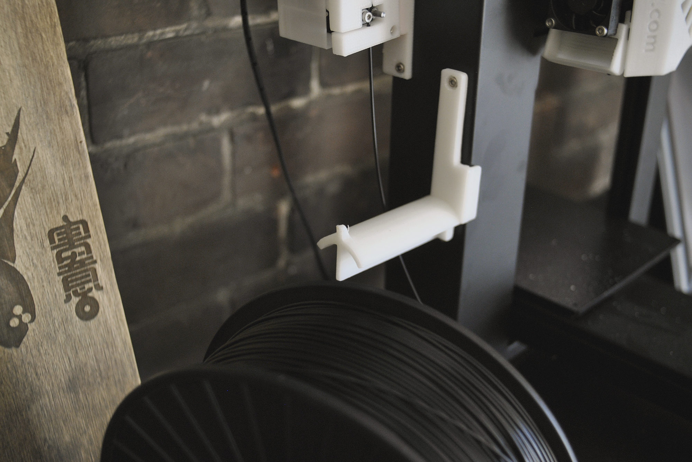

These Physical objects are designed to be 3d printed.
hex hive necklace — The Hex Hive Necklace is small designer necklace.victorian punch — The Victorian Punch is a knuckle weapon.occulter — Occulter is a shape inspired by the logo of a boutique I like.ring of scales — The Ring Of Scales is a large ring made of 3 scales.spagettini scale — This Spagettini Scale was first featured on the Makerbot Blog and should help you always cook the right quantity of pasta.spool holder — This Spool Holder works with the PP3DP Printer and should allow you to fit a larger spool on your printer.vast — Vast is the first book of Elodie Lareine, a manual of procedural imagery.defraction optics — Defraction Optics is the second book of Elodie Lareine, a manual of procedural imagery, in the fashion of Vast.thousand rooms — Thousand Rooms is a visual novel.